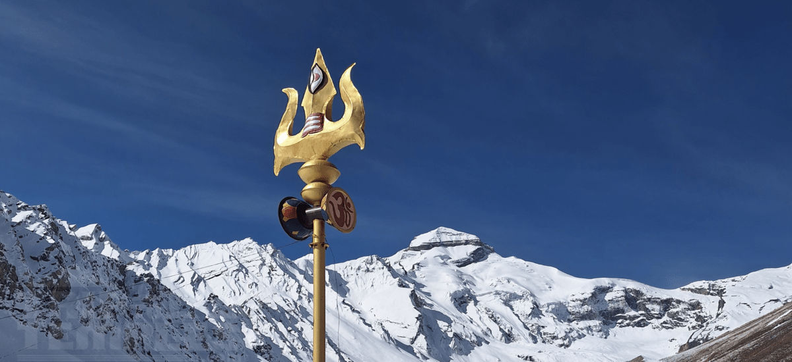
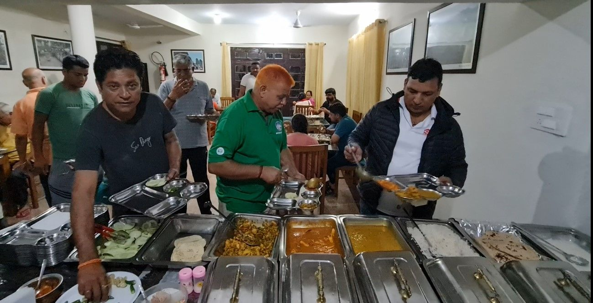
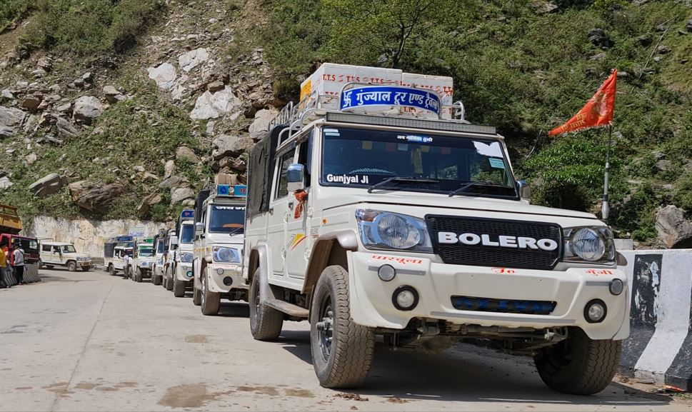
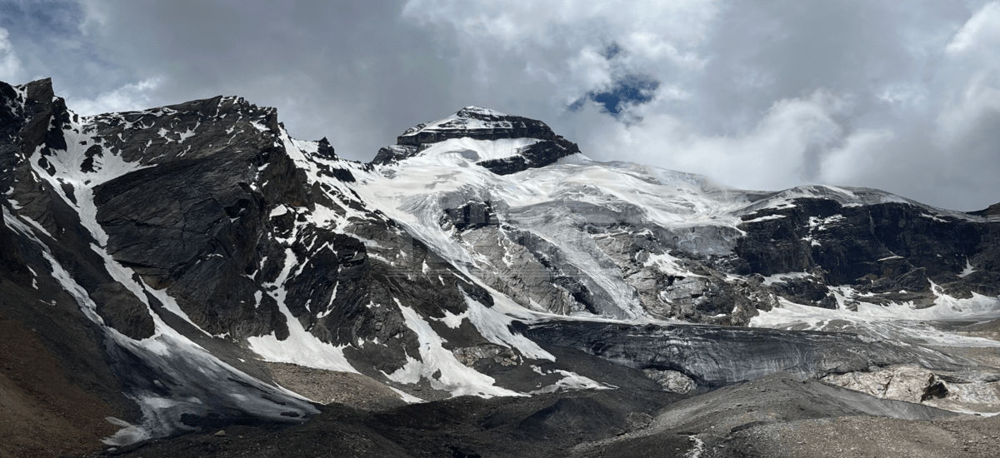
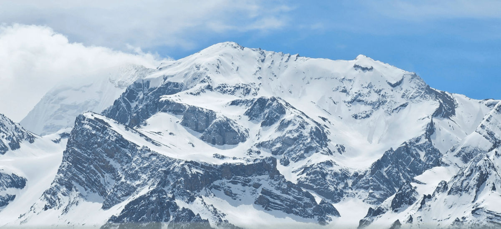
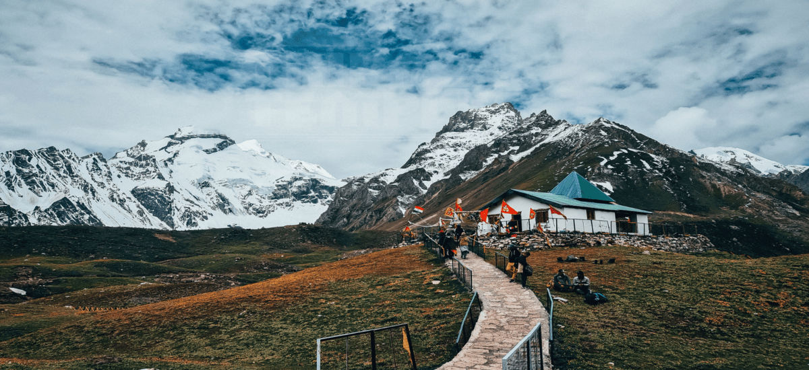
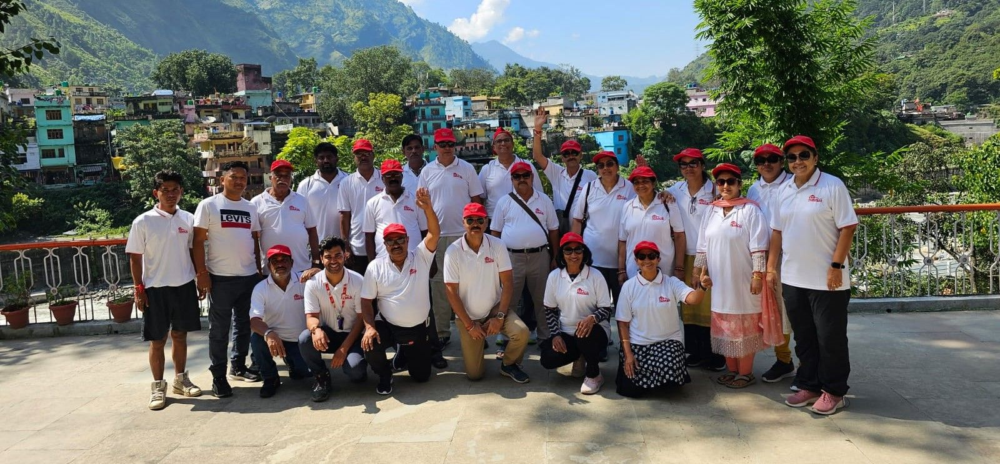

Adi Kailash FAQs

Adi Kailash Route
1. How many routes are available for Adi Kailash and Om Parvat Yatra?
Till 2019 the yatra was conducted by trek from Dharchula. Hence, there were a few trekking routes available then. After the roads are constructed, the yatra is covered by vehicles. Only one motorable route is available for the Adi Kailash & Om Parvat yatra, which is Kathgodam- Pithoragarh- Dharchula- Gunji- Jolingkong- Adi Kailash- Gunji- Om Parvat- Nabi/Gunji- Dharchula- Kathgodam.
2. How to go to Adi Kailash and Om Parvat?
Adi Kailash and Om Parvat are not easily accessible on your own due to the limited availability of 4x4 local cars. Poor or no network connectivity can make travel risky because in case of an emergency you won’t be able to contact anyone.
The best option to go on the Adi Kailash & Om Parvat yatra is with TTT. TTT has expertise in organizing and managing yatra smoothly.
3. How much time does it take to complete Adi Kailash and Om Parvat Yatra?
Earlier the whole Adi Kailash Yatra of about 200 km was by trek and it used to take about 18 days to complete the Adi Kailash Om Parvat Yatra. Now, with the development of motorable roads, the total time taken to complete Adi Kailash and Om Parvat Yatra by road is 7 nights and 8 days (Kathgodam to Kathgodam).
4. What is the route map of Adi Kailash & Om Parvat Yatra?
5. How much distance is covered in Adi Kailash and Om Parvat Yatra?
The total distance covered in Adi Kailash & Om Parvat Yatra is 825 km approx (Kathgodam to Kathgodam), which is as follows:
- Kathgodam to Pithoragarh: 196 km/ 7 hours approx
- Pithoragarh to Dharchula: 100 km/ 3 hours approx
- Dharchula to Gunji: 71 km/ 4 hours approx
- Gunji to Jyolingkong to Adi Kailash to Gunji: 68 km/ 3 hours approx
- Gunji to Om Parvat to Gunji: 32 km/ 1 hour approx
- Gunji to Dharchula to chaukori: 166 km/ 7 hours approx
- chaukori to Bhimtal: 189 km/ 8 hours approx
- Bhimtal to Kathgodam: 21 km/ 45 minutes approx
6. Where are Adi Kailash & Om Parvat situated? / What is the location of Adi Kailash & Om Parvat?
Both Adi Kailash and Om Parvat are situated in the Pithoragarh district of the Kumaon region in Uttarakhand.
Adi Kailash is located at an aerial distance of 105 km approx from Mount Kailash.
Om Parvat is located at such a point that the three sides of the mountain are each visible from India, Nepal, and Tibet. However, the side where snow falls on the peak in OM shape is visible only from India
7. Can we go to Adi Kailash and Om Parvat Yatra by helicopter?
Yes, Adi Kailash & Om Parvat Yatra by helicopter was Organised in 2024 by Uttarakhand Tourism Development Board and Trip To Temples . Helicopter service is now available.
8. Do we need to trek on the Adi Kailash & Om Parvat Yatra?
Until 2019, there was a trek of 200 km approx in the Adi Kailash Yatra but now a road network has been developed up to Jolingkong and Nabidhang. The Adi Kailash & Om Parvat Yatra has now become easily motorable. Darshan of Adi Kailash can be done from Jyolingkong itself, however, there is still an optional 2-3 km approx trek from Jolingkong to Parvati Sarovar and Chota Kailash Temple and 3-4 km approx trek to Gauri Kund.

When to go for Adi Kailash Yatra
1. When does Adi Kailash and Om Parvat Yatra start?
Although the Adi Kailash Yatra & Om Parvat Yatra starts in May for locals, however the yatra officially starts only after the inner line permit is issued by the SDM Office which is nearly in the third week of May or first week of June.
2. What is the period of Adi Kailash and Om Parvat yatra?
May to mid-October is the period in which one can go on the Adi Kailash Om Parvat yatra.
3. What is the best/ most favorable time to take Adi Kailash and Om Parvat Yatra?
Summertime is counted as the best time to visit Adi Kailash & Om Parvat. Pre-monsoon June and Post -monsoon September to October is the most pleasant time as the weather and temperature both will be in your favor.
4. What is the weather and climate of Adi Kailash and Om Parvat?
The summer season of Adi Kailash and Om Parvat - The summer season is counted as the best time to visit Adi Kailash. There is no risk of landslides at that time. The temperature during this period falls around 19℃ in the day and goes till 3℃ at night.
The Monsoon Season of Adi Kailash and Om Parvat - July to August is the monsoon season when it rains heavily and no tourist activity is to be seen. Although the temperature during this period remains around 20℃ to 6℃.
The Winter Season of Adi Kailash and Om Parvat - Winter season is the time when you would madly want to visit this place, but due to heavy snowfall in Adi Kailash and Om Parvat, all the roads that lead to this place are closed by the Government and well-advised to not travel. From November to April the temperature remains minus (around -6℃ to -30℃) 24*7 and the cold winds of snow are just not bearable. 
5. Does bad weather affect the Adi Kailash and Om Parvat yatra?
It is not only the Adi Kailash and Om Parvat yatra that is affected by bad weather, rather all the hilly areas are affected by it. It is well-advised not to travel in any hill area as the weather and climate conditions get worse. Various incidents happen in the hilly area during this season. However, people still visit Adi Kailash and Om Parvat with 2-3 days extra in hand in such circumstances.
6. Is it safe to go on Adi Kailash & Om Parvat Yatra during the Monsoon season?
During the monsoon season, it is well-advised not to travel in any hilly area as the weather and climate conditions can get worse leading to various incidents such as landslides, etc. However, you can still visit Adi Kailash Om Parvat keeping 2 or 3 days extra in hand because the Adi Kailash & Om Parvat Darshan might get delayed due to the monsoon.
7. When is the Monsoon season in Adi Kailash & Om Parvat?
July to mid-August is the Monsoon season in Adi Kailash & Om Parvat region.
8. What are the minimum and maximum temperatures at Adi Kailash and Om Parvat? / What is the average temperature at Adi Kailash?
During the Adi Kailash & Om Parvat Yatra from June to October, the day temperature is pleasant and the nights are cold. During the day temperature ranges between 12°C to 16°C and at night between 2°C to 6°C.
How to apply & Criteria of Adi Kailash Yatra
Only Indian citizen with Valid ID like Passport or Adhar Card are Eligible for this yatra.
1. How to register for Adi Kailash Om Parvat Yatra?
Until 2019 KMVN was the sole organizer of the Adi kailash Om Parvat yatra. In 2020, Adi Kailash & Om Parvat yatra was cancelled due to the Covid-19 pandemic. In 2021 Trip To Temples became the leading operator for Adi Kailash Om Parvat darshan. In 2022, KMVN & TTT collaborated to organize the Adi Kailash Om Parvat Yatra. You can contact TTT at https://www.triptotemples.com/package/adi-kailash to register for Adi Kailash Om Parvat yatra.
2. Is there any procedure that needs to be followed to apply for Adi Kailash and Om Parvat Yatra?/ What is the process followed in applying for Adi Kailash and Om Parvat Yatra?
- Fill out the Adi Kailash Yatra Registration form and paste one colored photo on it.
- Pay the registration amount in a Corporate Bank Account or online and mention the transaction number on the registration form.
- Attach a self-attested copy of identity proofs like valid Indian Passport/ Aadhaar card/ Voter ID Card/ Driving License + 2 photographs.
- Email registration form scanned valid ID Proofs and transaction number on info@triptotemples.com and courier self-attested original copies to us on office address.
3. Do we require any documents for Adi Kailash and Om Parvat Yatra? What are they?
There are a few documents required for Adi Kailash & Om Parvat Yatra such as Valid ID proof, Passport size photos, Physical fitness certificate issued by MBBS Doctor, Adi Kailash & Om Parvat Yatra notarized affidavit on Rs 30 stamp paper, Police Verification Form (if passport not available), Covid 19 Vaccination Certificate, and Inner-line permit (applied by Trip To Temples).
4. Do we require VISA and Passport to go on Adi Kailash and Om Parvat Yatra?
One does not require a VISA to go on Adi Kailash & Om Parvat Yatra. A passport is not necessary but if you have it then you will be exempted from Police verification.
5. Is there any permit required for Adi Kailash and Om Parvat Yatra?
Since we are travelling in the Indo- Nepal border area, so a permit known as an Inner line permit issued by SDM in Dharchula is required to visit Adi Kailash & Om Parvat.
6. Is there any age limit for Adi Kailash and Om Parvat Yatra? If yes, What is it?
Physically fit people from age of 9 years to 70 years are eligible to visit Adi Kailash & Om Parvat.
7. Are infants and children allowed on the Adi Kailash and Om Parvat yatra?
The age limit for Adi Kailash & Om Parvat Yatra is 9 years to 70 years, so children below 9 years are not allowed on the Adikailash Om parvat yatra.
8. Is there any bodyweight limit for Adi Kailash and Om Parvat Yatra? If yes, What is it?
There is no bodyweight limit for Adi Kailash & Om Parvat Yatra. All the People who are physically fit can go for Adi Kailash & Om Parvat Darshan.
9. How much luggage can we carry in Adi Kailash Yatra? Is there any weight limitation?
There is no weight limitation of luggage, however, it is advisable to carry the least luggage for your comfort on the Adi Kailash Om Parvat Yatra as you have to carry your luggage.
Facilities in Adi Kailash Yatra
1. What services/ facilities will be provided on the Adi Kailash and Om Parvat Yatra?
The Adi Kailash Yatra Package of TTT includes: Adi Kailash Om Parvat Yatra Inner Line Permit, Tour Guide, Cook, Transportation by 4 wheeler, Meals, Accommodation in resthouses/Homestays, provision for Hawan Puja & Cultural program.
2. How many meals per day do we get during Adi Kailash Yatra?
Three meals per day, which include Breakfast, Lunch, and Dinner are provided by TTT.
3. What type of food is served in Adi Kailash yatra? Veg or Non-Veg?
Pure veg food cooked with utmost hygiene is served in an excellent buffet system to the pilgrims by TTT on Adi Kailash & Om Parvat Yatra.
4. Which cuisine is served on the Adi Kailash & Om Parvat Yatra?
Freshly cooked North Indian cuisine will be served in an excellent buffet system by TTT on the Adi Kailash Om Parvat yatra.
5. How do you provide food in the Adi Kailash & Om Parvat yatra? It's from Hotel/ Restaurant or cooked by your team?
The Adi Kailash & Om Parvat region does not have restaurants as of now. Permanent kitchens and Cooks are deployed at each rest house to serve freshly cooked pure veg no onion no garlic meals.
6. Can we cook food on our own on Adi Kailash & Om Parvat Yatra?
Cooking your food on Adi Kailash Om Parvat Yatra would be a difficult task because firstly it is a sensitive area so you can’t stop anywhere and start cooking. Secondly, the kitchen won’t be available at all the spots and where it is available, outsiders aren’t allowed to enter the kitchen. Thirdly, carrying a gas cylinder without NOC is not permitted. Lastly, the market is available only up to Dharchula so you won’t be able to find any grocery store.
7. Can I get fruits or any other special food items if I am fasting on Adi Kailash Om Parvat Yatra?
Fasting is not advisable at such a high altitude as it may hamper your health. There is no market available nearby, so providing fruits or any special fasting food items will completely depend on availability. You will have to prior inform us.
8. Can I get Jain Food during the Adi Kailash Yatra?
No Onion No Garlic food will be provided by TTT in Adi kailash and Omparvat Yatra. In case you have any other special requests, you need to remind the cook deputed at Infrastructures each time meal is being prepared.
9. Is clean drinking water available on the Adi Kailash Om Parvat Yatra?
Yes, clean drinking water will be provided by TTT on Adi Kailash & Om Parvat Yatra.
10. Can we organize Havana during the Adi Kailash Om Parvat yatra?
TTT are providing their pilgrims provision for Havana Puja at Kala Pani in Adi Kailash & Om Parvat yatra.
11. Are markets available on the Adi Kailash Om Parvat Yatra route?
Markets are available only till Dharchula in Adi Kailash Om Parvat route.
12. Which type of accommodation is available in Adi Kailash Yatra?
Hotels/ rest houses are provided by TTT during the whole Adi Kailash Om Parvat yatra.
13. Which category of accommodation is available in Adi Kailash Yatra?
TTT takes one of the best hotels/Homestays in the Kumaon region. Hotels/Hometsays have the best available accommodation category in the Adi Kailash & Om Parvat Yatra.
14. Do we get separate beds, blankets & cots in Adi Kailash yatra?
You will be provided with a separate mattress along with a separate blanket and pillow at all the Hotels/ Homestays. This is the best available option there.
15. Do we stay in camps or tents in Adi Kailash and Om Parvat Yatra?
It depends upon the availability. Mixed accommodation, i.e. both camps and dormitory will be provided in the Hotels/Homestays.
16. How many people share one room in the Adi Kailash & Om Parvat Yatra? Can I get an individual room by paying extra?
The capacity of the accommodation in Hotels/Homestays ranges from 4 to 15+ people because of the availability of mixed accommodation. Individual rooms are not available in the accommodations of Adi Kailash & Om Parvat.
17. Is a laundry facility available at the accommodation provided on Adi Kailash Om Parvat Yatra?
The laundry facility is not available at the accommodation provided on Adi Kailash & Om Parvat Yatra.
18. Where do we get electricity during the Adi Kailash Om Parvat trip?
There is limited availability of power supply in the Adi Kailash & Om Parvat regions. However, TTT will provide electricity each day for some hour in the morning and some hours in the evening above Dharchula. Solar panels are also available at the Homestays but their usage entirely depends on the prevailing weather condition.
19. Do we get charging plug points in the rooms provided during the Adi Kailash Om Parvat yatra?
No, charging plug points won’t be available in the rooms. However, you will get common charging plug points at all the homestay, but there is limited availability of power supply due to unconditional weather, it is advisable to carry a good quality power bank of at least 5000mah.
20. What type of transport is provided during the Adi Kailash Om Parvat Yatra?
The distance between Kathgodam to Dharchula and Dharchula to Kathgodam is covered in 13 seater Tempo Traveller and the distance from Dharchula to Dharchula is covered in a 4 x 4 Camper/Bolero where in each bolero only 4-5 people are seated.
21. How many people are seated in one transport on Adi Kailash & Om Parvat Yatra?
Although the seating capacity of one vehicle is eight, however, TTT ensures the comfort of their tourists by accommodating only 4 to 5 people in one vehicle on Adi Kailash Om Parvat Yatra.
22. What is the road condition of the Adi Kailash Yatra route?
Earlier the road network was not developed and people had to trek for about 200 km on the Adi Kailash Om Parvat Yatra. But with the development of road networks, the Adi Kailash Om Parvat yatra has become comparatively easier. The road is rough and not pitched but it is easily motorable.
23. What kind of toilet facility do we get in Adi Kailash Yatra? / What is the toilet condition at the Adi Kailash route?
There is limited availability of infrastructure in the Adi Kailash & Om Parvat region. Toilets are available at few spots such as checkposts, villages, etc enroute Adi Kailash and Om Parvat. However properly closed toilets both Indian as well as western are available at all Home Stay.
24. Which are the places where we do not get toilet facilities on Adi Kailash & Om Parvat Yatra route?
Due to limited infrastructure, there is difficulty in finding toilets on the way to Adi Kailash and Om Parvat. Toilets might be available at few spots such as villages, checkposts etc. You will get toilets at all the Home Stay.
25. Do we have common or separate toilets for men & women on Adi Kailash & Om Parvat Yatra?
Common toilets in good amounts for men and women are available at all the Home Stay on Adi Kailash & Om Parvat yatra.
26. Do we need to use tissue paper or water is available in toilets in Aadi Kailash & Ohm Parvath?
Water is available in all the toilets of Home Stay in Adi Kailash and Om Parvat yatra.
27. Will we get heaters, immersion rods, or geysers in the accommodation on Adi Kailash & Om Parvat Yatra?
Due to a limited power supply, any sort of heating appliances won’t be available in the accommodation provided on Adi Kailash & Om Parvat Yatra.
28. Will we get hot water in the accommodation on Adi Kailash & Om Parvat Yatra?
Since immersion rods and geysers are not available in the accommodation, therefore each Home Stay will have a common fireplace where water can be heated. It will be self-service and the water available will be limited.
Medical & Support Team
1. In case of emergency, what medical facilities are available in Adi Kailash Yatra?
TTT team is experienced enough and well connected to handle all exigencies and to ensure basic medical support we have a medical kit available. Oximeter and first aid kit will be available with each group all the time. In case of extreme situations, we seek the help of the Doctor available at Army camps and transport the patient down to Dharchula where hospitals are available.
2. What happens in case of any health issue or casualty on Adi Kailash & Om Parvat Yatra?
In case you are feeling uneasy, the first thing you need to do is to inform your tour guide and get your saturation level checked with the oximeter available with each group. Guides are well experienced to handle such situations. In case of emergency, we contact the doctors available at the Army camps.
3. Is there any permanent doctor available with the Adi Kailash Yatra Group?
Permanent doctors are not available with the Adi Kailash Om Parvat Yatra Group because it is generally not required. A basic medical kit and oximeter are available to each group. The Guides are well trained to handle any emergency. We also contact doctors available at the Army camps in extreme situations.
4. Are hospitals available on the Adi Kailash Om Parvat route? Are they expensive?
There are army hospitals available on the Adi Kailash Om Parvat route. In an adverse situation, the patient is taken to the district hospital in Dharchula. They are basic hospitals, hence they are affordable.
5. In case of hospitalization, who bears the charges for the same in Adi Kailash Om Parvat Yatra?
In case of hospitalization or any other extra charges, the tourist has to bear the charges for the same in Adi Kailash Om Parvat Yatra.
6. Is an ambulance facility available in Adi Kailash & Om Parvat? What are the charges for the same?
The ambulance facility is not available on the Adi Kailash & Om Parvat Yatra route. In case of emergency, our transport is used as an ambulance. The charges may vary between 35 to 40 thousand.
7. Do you have an oxygen cylinder facility available during the Adi Kailash & Om Parvat yatra?
Generally, an Oxygen cylinder is not needed. However, an oxygen cylinder will be available at Homestays along with an oximeter.
8. What precautions one should take before and during the Adi Kailash & Om Parvat yatra?
Earlier, the Adi Kailash & Om Parvat Yatra used to be tough when people had to trek for about 200 km. Now with the development of road networks, the Adi Kailash Yatra has become comparatively easy. However, you can still take some precautions, firstly it is advised to maintain your physical fitness for which you can practice Pranayam and walk daily. Secondly, keep yourself hydrated and eat well while on the Adi Kailash Om Parvat Yatra, and preferably do not fast at high altitudes.
9. Who will support pilgrims for the medical or evacuation process during an emergency on the Adi Kailash & Om Parvat yatra? / Are your supporting staff experienced enough to manage the Yatra?
Guide and monitoring personnel from TTT who are a group of expert and trained people will be supporting the pilgrims for the medical or evacuation process during an emergency on the Adi Kailash Om Parvat Yatra.
10. Will the support team of TTT brief us at different points during yatra?
Dharchula is the main point where the expert team of TTT do a detailed briefing session and as the yatra proceeds they keep on briefing the guests at different points. They will assist you in the entire Adi Kailash & Om Parvat Yatra.
11. Can I borrow the phone from the support team for communicating?
The phone of the support team can be used to communicate only in case of an emergency.
12. Do the supporting staff take responsibility in case of any mishappening?
The support staff of TTT are trained and expert enough to handle such situations. In case of any mishappening, they will be present there to support you and not leave you behind.
General Questions on Adi Kailash
1. Is Adi Kailash and Chota Kailash same?
Adi Kailash is considered a replica of Mount Kailash, hence Adi Kailash is popularly known by the name Chota Kailash.
2. What is the story behind Adi Kailash & Om Parvat?
Both Adi Kailash and Om Parvat are considered sacred pilgrimage sites of Hinduism.
Adi Kailash, also known as Baba Kailash is the Second Dham of the Panch Kailash. It is the home of Lord Shiva and Mata Parvati along with their children Ganpati Ji and Kartikeya Ji. It is said that the darshan of Adi Kailash can make your inner self enlightened and the cosmic energy prevalent here can transform the person with negative thoughts into a positive thinking approach.
Om Parvat or Mount Om is the only mountain among such eight mountain ranges in India that has been discovered. This ancient holy mountain has a magic of its kind along with a strong religious connection as the snow falling on the mountain takes the shape of OM ॐ - the holy symbol of Hindus.
3. What is the Height / Altitude/ Elevation of Adi Kailash & Om Parvat?
Adi Kailash stands tall at a height of 5945 meters above sea level on the Indo-Tibet border with the last village of India, Kuti.
Om Parvat stands at the height of 5543 meters above sea level on the Indo-Nepal border.
The highest altitude on the Adi Kailash & Om Parvat Yatra that people go on is Parvati Sarovar which is 4501 meters above sea level.
4. What is the Adi Kailash History?
According to the Puranas, Adi Kailash has great importance as it was the main stoppage of Lord Shiva’s marriage with Mata Parvati, which originated from Kailash Parvat Mansarovar. It is said that the demon king Ravana who was one of the most fierce devotees of Lord Shiva meditated here for a very long period and later was blessed with immense power, strength, and 10 heads. Not only Ravana but as history says the Pandava Brothers and the Sage Vyas also meditated here at Adi Kailash for a very long time.
5. What is the Om Parvat secret? / What is the Om Parvat rahasya?
The mystery or miracle in Om Parvat will take you closer to God and will remove all your illusions. The unbelievable impression of OM ॐ is the most fascinating characteristic of this peak which is naturally formed with the deposition of snow against the black background of the holy mountain.
6. Can we climb Adi Kailash & Om Parvat?
No, it is not possible to climb Adi Kailash and Om Parvat. However one can climb up to Gauri Kund on Mount Adi Kailash at an elevation of 5245 meters above sea level.
7. What is the importance/ benefit of Adi Kailash & Om Parvat Yatra?
It has been said in Hindu mythology that Adi Kailash is the abode of Shiva- Parvati Pariwar. It is believed to be the place where Lord Shiva has been meditating and it is considered to be the first stoppage of the Shiva Parvati Barat. On this yatra you will also be visiting firstly Chitai Golu Devta’s Temple which is popularly known as God of Justice, it is believed that in case you have an ongoing legal case and you make a wish in this temple your wish will be granted. Secondly, the Jageshwar temple is believed to be the place where Lord Shiva himself, Saptarishi, and Adi Shankaracharya did Tapasya here. Thirdly Patal Bhuvaneshwari wherein it is considered that taking a blessing here is equivalent to taking a blessing of Chota Chardham. It is said that Adi Kailash & Om Parvat yatra washes away the sins, thus restoring the Karma cycle. The cosmic energy that is prevalent here will make you feel transformed.
8. How should I plan for Adi Kailash Yatra?
Adi Kailash and Om Parvat are not easily accessible on your own due to the limited availability of 4x4 local cars. Poor or no network connectivity can make travel risky because in case of an emergency you won’t be able to contact anyone.
The best option to plan the Adi Kailash & Om Parvat yatra is to contact the TTT . TTT has their accommodation available at all the points and has expertise in organizing and managing yatra smoothly. https://www.triptotemples.com/adi-kailash/adi-kailash-and-om-parvat-ex-delhi
9. What are the eligibility criteria for Adi Kailash Om Parvat Yatra?
- Physically fit person from age 9 years to 70 years.
- He/She has a valid Govt. issued ID Proof (Aadhar card/ Passport/ Voter ID/ Driving License)
- Physical fitness certificate by any MBBS doctor.
10. Is it safe for ladies, senior citizens, and people who are travelling alone on Adi Kailash and Om Parvat yatra?
TTT ensures the safety and security of all the people who are travelling with them. We have the best support system and experienced TTT guides who look after the safety and security of everyone travelling with us. Hence ladies, senior citizens, and people who are travelling alone can go with TTT on Adi Kailash and Om Parvat Yatra without any hesitation.
11. What all objects are allowed and not allowed on the Adi Kailash and Om Parvat yatra?
You will be provided with a list of things by TTT that are allowed and you can carry with you on the Adi Kailash Om Parvat Yatra one month before the date of departure.
12. Where can we click pictures on Adi Kailash & Om Parvat Yatra?
During the entire Adi Kailash & Om Parvat yatra, you will get plenty of picturesque spots. However, you are not allowed to take pictures of all the military bases that come en route to Adi Kailash Om Parvat Yatra, Uttarakhand.
13. Do I get a certificate for Adi Kailash Om Parvat Yatra?
Yes, a certificate will be issued by Trip To Temples (TTT) to each of the pilgrims.
14. What is the Adi Kailash Yatra 2022 date?
The Adi Kailash & Om Parvat Yatra takes place from June to October. TTT will be organizing the Adi Kailash Yatra on the following dates that are taken from Hindu Panchang:-
15. Is there any dress code for males and females on Adi Kailash & Om Parvat Yatra?
No, there is no dress code for males and females for the darshan of Adi Kailash Parvat and Om Kailash Parvat. It is advisable to wear comfortable clothes on the entire journey.
16. How many check posts are there on Adi Kailash and Om Parvat routes?
There are a total of 10 check posts en route to Adi Kailash and Om Parvat.
17. How much time is taken at each check post on Adi Kailash and Om Parvat route?
The time taken at each check post-en-route Adi Kailash & Om Parvat will depend on the size of the group. At each check-post, the authority verifies your documents and maintains a record of the details.
18. How many people are there in one group on Adi Kailash Om Parvat Yatra?
There will be a maximum of 25 -30 people in one group on Adi Kailash Om Parvat Yatra. Each group will be accompanied by a Trip To Temples (TTT) Tour leader and a Local Tour Guide.
Things to carry & Stuff given by TTT
1. What kind of / How many clothes do I need to carry on Adi Kailash and Om Parvat yatra?
It is advisable to carry comfortable clothes on Adi Kailash & Om Parvat yatra, which may include:
- Cotton/ Jeans pants - 3 nos
- Shirt / Tshirt full sleeves - 6 nos
- Socks - cotton and woollen
- Raincoat - lightweight
- Pullover
- Scarf / Muffler / Cap
- Facemask
- Thermal Innerwear - 2 sets
- Tracksuit - 1 pair
- Woollen and Leather Gloves - 1 pair
- Jacket - good quality
- Woollen sweater with high neck
- Wind Cheater Jacket
Get in Touch
Have An Enquiry? Write To Us…
Popular Pilgrimage Packages
Information Links and Downloads
Talk to Kailash Yatra Expert
Submit your contact number.
Kailash Yatra Expert will call You within 1 minute.
(24X7 Free Service, India Number only)
Get All Details on Mobile


Related Packages


Adi Kailash Helicopter Package
4 Night / 5 Days
Route : Pithoragarh → Gunji/ Nabhi/ Napalchu(3N) → Pithoragarh →+0


Adi Kailash by road From Kathgodam
7 Night / 8 Days
Route : Pithoragarh(1N) → Dharchula(1N) → Gunji /Napalchu (2N) →+3

Frequently Asked Questions
Related Blogs


Weather and Temperature of Adi Kailash and Om Parvat: Exploring the Seasonal Variation of Temperature at Adi Kailash & Om Parvat

Kathgodam: The Last Railway Station of Uttarakhand's Kumaon region


We Got Featured in the Media


 Call
Call  WhatsApp
WhatsApp  Enquiry
Enquiry Connect with us :
Office Address :
Trip To Temples, 201, JOP Plaza
Sector 18, Noida, 201301
Uttar Pradesh, India
Call : +91-8510007751
E-mail : info@triptotemples.com